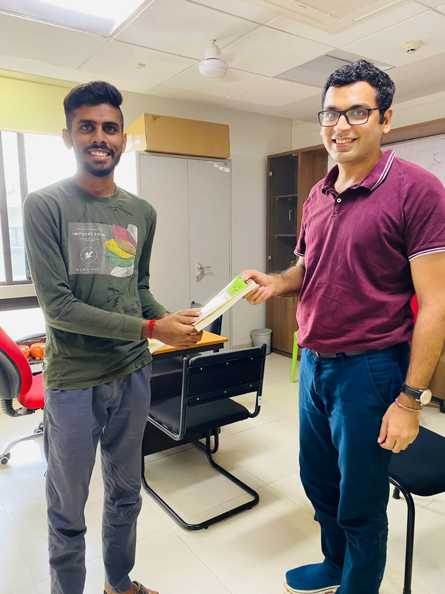
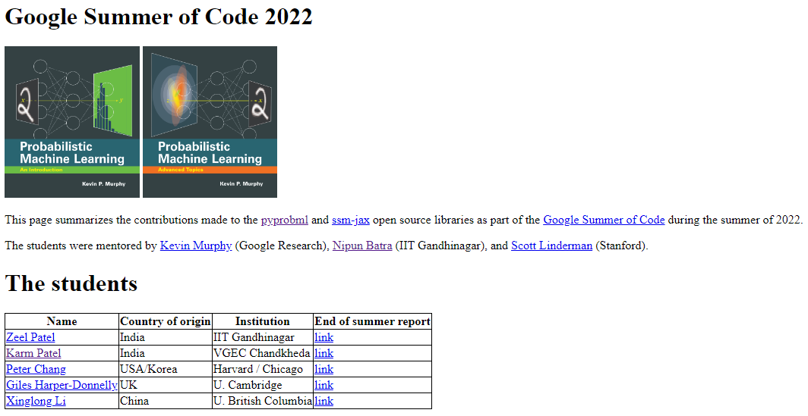
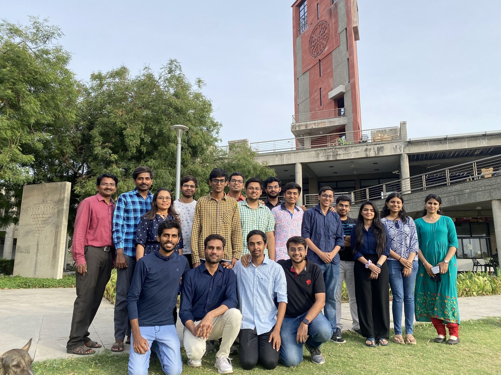

Sustainability Lab - The Big Booster in my career
About me
Namaste! My name is Karm Patel. I was a summer intern at the sustainability lab in 2021 and a GSoC contributor in 2022, mentored by Dr. Kevin and Prof. Nipun; currently, I’m pursuing an M.Tech in Computer Science and Automation at IISc, Bangalore, and am an upcoming Data Scientist at Meesho.
 Received book as a farewell gift from Prof. Nipun :)
Samachar project - Where the journey starts
In April 2021, I virtually joined the Sustainability lab as a summer research intern since things were online due to COVID-19. I worked on the project “Samachar: The Print News Media on Air Pollution in India” under the guidance of Prof. Nipun, Sarath Guttikunda (Founder - Urbanemissions.info), and PhD students - Rishiraj Adhikary and Zeel B Patel. Over three months, I contributed to this project, which culminated in a paper presented at ACM COMPASS 2022. This was my first research experience, where I learned valuable tech skills and essential research elements like the importance of domain knowledge and technical writing.
Opensource contribution - the core skill lab focused in summer
After my summer internship at the lab in 2021, I focused on preparing for the GATE exam to pursue a master’s degree, which I took in February 2022. With about four months before starting my master’s program and a keen interest in ML/AI, I approached Prof. Nipun to explore further. Here I started exploring probabilistic machine learning (PML) and doing some hands-on on open source. My first task involved contributing to the well-known PML library, Pyro. It took me three days to resolve an issue, which significantly enhanced my debugging skills. I believe that skills such as working with GitHub and understanding other people’s code quickly are crucial for both research and corporate environments. Prof. Nipun is one of those rare professors who also emphasizes these practical skills.
When dream comes true - Working with Dr. Kevin during GSoC, TensorFlow
During this period, Prof. Nipun and Zeel collaborated with Dr. Kevin on his GSoC project centered around his recent textbook, “Probabilistic Machine Learning: An Advanced Perspective.” The project aimed to enhance the textbook by writing code for figures, adding educational coding demos, improving existing figures, converting code to Google’s new framework JAX, and adding new sections to the book. During this time, I was trying other things not related to this project, since I was not expecting any chance to work in this GSoC project officially since I did not have much background in ML, and also Zeel’s selection was almost final, so it was unlikely that Dr. Kevin take two students from the same lab. But Prof. Nipun pushed me to contribute to this project unofficially, saying, “You must give your 100% for this GSoC project; if nothing happens, at least you will get a chance to learn about PML and JAX.” So I started attending meetings with Dr. Kevin and Prof. Ashish Tendulkar (Google Research, Prof IITB) and started working on issues related to Dr. Kevin’s repo. Finally, the day came when Dr. Kevin told that - “we are happy to take Karm also as a GSoC contributor.” This opportunity would not have been possible without Professor Nipun’s encouragement.
 GSoC Team - could not find screenshots of our meetings so attaching this :)
Summer’22: when the lab flourished with many interns
Fortunately, this time, I was staying on the IITGn campus, unlike during COVID time! So I was working from the lab only, and since Prof. Nipun was also an advisor of my GSoC project, we used to have offline meetings in his office and had fruitful discussions. In between all this, many summer interns joined the lab for various projects. Initially, they were requested to make open-source contributions to Dr. Kevin’s repo and create pull requests. Prof. Nipun gave me the responsibility to review their PRs. Thus, I got a chance to interact with almost all the interns, and that was a great experience for me to explore my management & communication skills. That was the time when student space (in front of 4-5 prof’s cabin) was almost full with our lab students. Sometimes other lab students were irritated too, seeing that much crowd :) Prof. Nipun also started a very nice initiative called Code First ML, where in daily group meetings presenters have to explain one topic by implementing the relevant algorithms.
 Sustainability Lab at that time - pic before Prof. Nipun’s treat
Final notes
This entire journey has been incredible for me; I truly enjoyed it, and it has significantly shaped my career. None of this would have been possible without Prof. Nipun’s support. I’m fortunate to have him as a lifetime advisor. :)